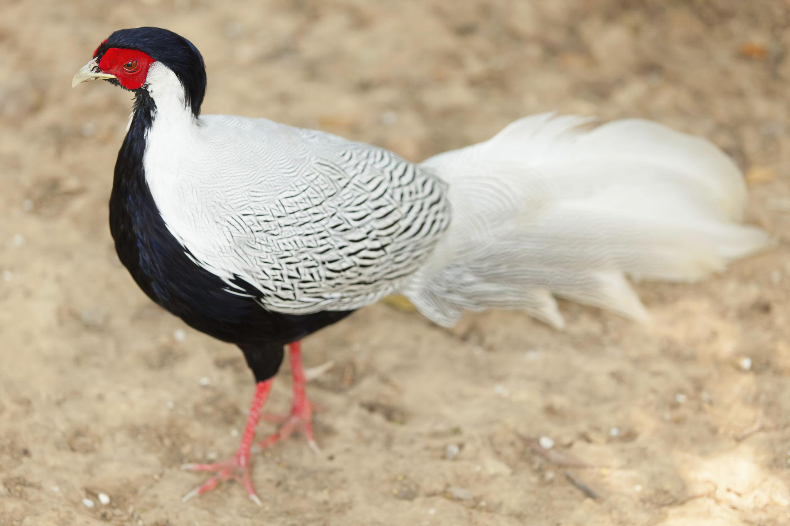

🌎 País de origen
China / Sudeste Asiático
📖 Historia
El faisán plateado es una especie muy extendida en Asia. Ha sido criado durante siglos por su valor ornamental y su carne. Es muy popular en aviarios y colecciones de aves exóticas. El macho del Faisán plateado posee una elegante cresta negra y roja sobre la cabeza que puede levantar ligeramente cuando está alerta, cortejando a una hembra o intentando parecer más grande frente a una amenaza.
✨ Datos curiosos
- El macho tiene una llamativa cresta negra que le da una apariencia elegante y majestuosa.
- Su plumaje blanco con finas líneas negras lo convierte en uno de los faisanes ornamentales más apreciados del mundo.
📸 Ejemplares de nuestra granja


⭐ Calificación de visitantes
⭐⭐⭐⭐⭐
Esta especie es una de las favoritas de los visitantes de La Granja de Gregori.